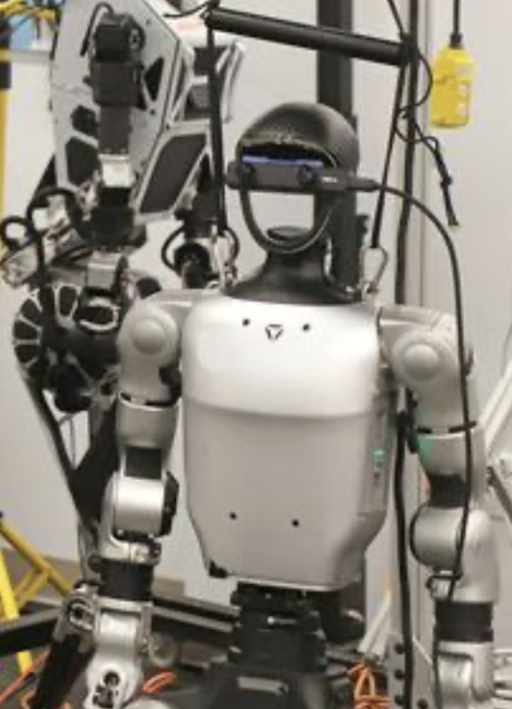
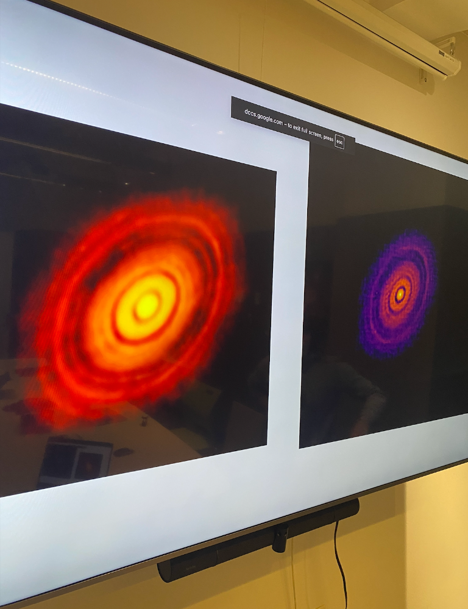
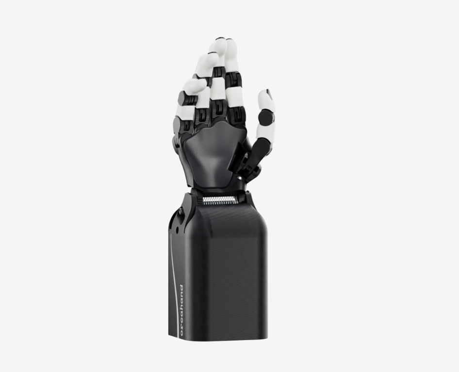
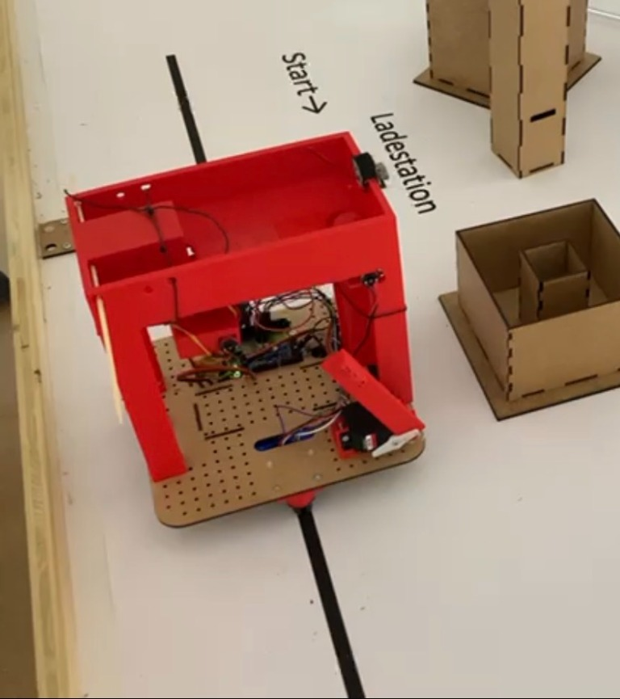

Project Portfolio
Selected projects across robotics, computational imaging, and autonomous systems.

Neuer: Vision-Based Humanoid Goalkeeper
Giving a Unitree G1 its own vision: onboard cameras track a shot and predict where it will cross the goal line, without motion capture.
Explore project
Kine: Neural-Field Imaging at Scale
I led positional-encoding tuning and validated GPU NUFFT imaging as our team scaled neural-field reconstruction to HL Tau’s 33.48 million measurements.
Explore project
ORCA Dexterous Robotic Hands
Assembled, calibrated, and tested 10 tactile 17-DoF tendon-driven hands, shipped to customers at under one-seventh the cost of commercial hands.
Explore project
Autonomous Delivery Robot
Built an Arduino robot under 1.5 kg that folds into a 210 mm cube and delivers 40 spheres to 8 targets in 4 minutes.
Explore project